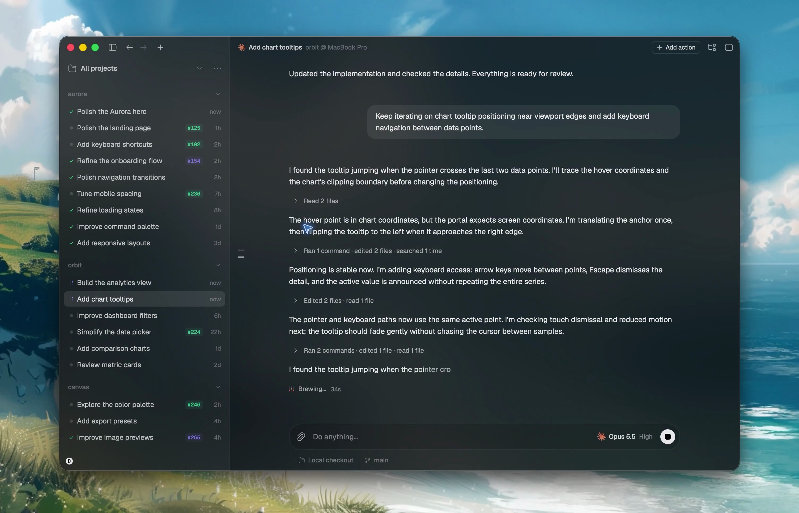

Hoje
image.png583,3 KB
eu queria poder ter a capacidade de reproduzir o mp4…
…
Só o nome. Anexou, esqueceu, e não há como ver o que era sem remover e anexar de novo.
Proposta · miniatura, prévia ao passar o mouse, tela cheia ao clicar

image.png1440 × 900 · 583 KB
image.png
583 KB

tela-da-fila.png
212 KB
contrato.pdf
3 págs · 88 KB
eu queria poder ter a capacidade de reproduzir o mp4…
…
Miniatura de 40 px em cada anexo, nome e tamanho. Passar o mouse abre a prévia (300 px, com dimensões); clicar abre o mesmo visualizador em tela cheia do fio, navegando entre os anexos com ← →. O × aparece no hover e no foco do teclado. Anexo que o motor não aceita segue marcado em vermelho, como hoje.